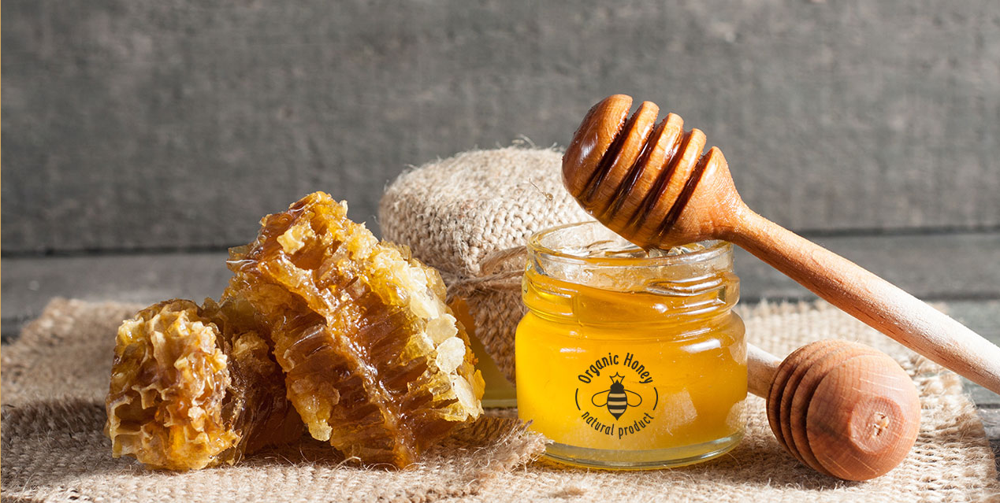

<div id="carouselExampleInterval" class="carousel slide" data-bs-ride="carousel">
  <div class="carousel-inner">
    <div [class]="img.classes" *ngFor="let img of images">
      
    </div>
  </div>
  <button class="carousel-control-prev" type="button" data-bs-target="#carouselExampleInterval" data-bs-slide="prev">
    <span class="carousel-control-prev-icon" aria-hidden="true"></span>
    <span class="visually-hidden">Previous</span>
  </button>
  <button class="carousel-control-next" type="button" data-bs-target="#carouselExampleInterval" data-bs-slide="next">
    <span class="carousel-control-next-icon" aria-hidden="true"></span>
    <span class="visually-hidden">Next</span>
  </button>
</div>
<div class="fluid-container">
  <div class="d-flex">
    <div class="bgColor flex-shrink-1 d-flex flex-column gap-3 justify-content-center px-3">
        <div>
          Keep On Buzzing
        </div>
        <div>
          What Is Really
        </div>
        <div>
          Raw Honey?
        </div>
        <div>
          Really Row Honey Is Totally Unprocessed Honey. it Still contains pollen and Honeycomb...
        </div>
        <button class="btn btn-danger myBtn px-2 align-self-start">
          Learn More
        </button>
      <!--  -->
    </div>
    <div class="flex-grow-1">
      
    </div>
  </div>
</div>
